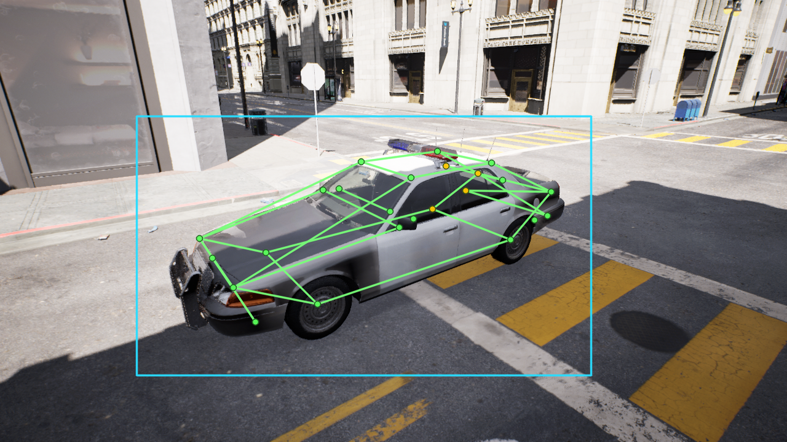
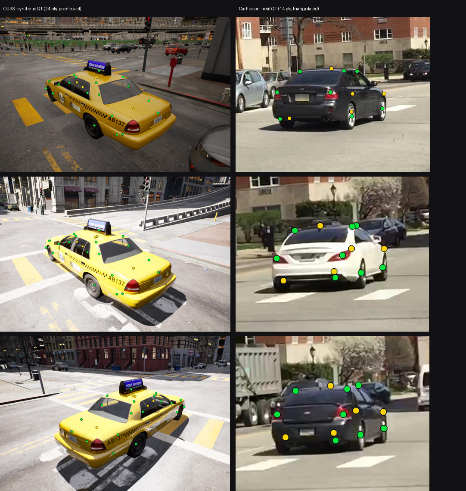

ue5-vehicle-synth
Synthetic vehicle-keypoint datasets, rendered inside Epic's City Sample with Unreal Engine 5.

Full demo: videos/demo.mp4 - three scenes, each a single vehicle driving normally, then with its 24-point keypoint skeleton, then as a wireframe ghost.
Real vehicle-keypoint data is scarce and expensive to label. A game engine renders the same scene with perfect, free, pixel-exact annotations and unlimited variety of viewpoint, vehicle, weather, and time of day. This project builds that generator as a reusable Unreal Engine C++ plugin and uses it to extend the vehicle-keypoints model from a 14-point to a 24-point schema with a sim-to-real recipe.
-
Rendered in the Matrix city
Frames come from Epic's City Sample, so the dataset carries a recognizable, high-fidelity look while staying fully redistributable.
-
24-point schema
The first 14 points are the CarFusion canonical order; ten new points (mirrors, bumper and window corners) extend it.
-
Honest evaluation
A kill switch gates the work: synthetic pre-training must measurably beat the real baseline, or the result is reported as-is.
-
Run it yourself
Step-by-step setup, capture, configuration, and troubleshooting guides.
How it works
The pipeline decouples annotation (fast, in-editor) from rendering (gold-path, offline), kept in lockstep by a keyframed Level Sequence so every rendered frame has a matching label.
A C++ wrapper reads City Sample's baked ZoneGraph lane network directly from the engine and returns lane positions plus travel directions. The vehicle is placed on a real lane, aligned to traffic.

For each pose, 24 anatomical keypoints are projected to pixels with a bidirectional occlusion trace for CarFusion-style visibility, and a mesh-bounds bounding box that reaches the tire bottoms. Every visible city vehicle is labelled, not just the rig.

A single camera is keyframed through every pose; Movie Render Queue renders each as a sharp 1280x720 frame with full Lumen global illumination.

Per-frame records become a validated multi-instance COCO keypoint dataset, consumed directly by the vehicle-keypoints training pipeline.
Read the full engineering walkthrough
The 24-point schema
| Range | Points | Group |
|---|---|---|
| 0-3 | 4 wheels | CarFusion canonical |
| 4-7 | head / tail lights | CarFusion canonical |
| 8 | exhaust | CarFusion canonical |
| 9-12 | 4 roof corners | CarFusion canonical |
| 13 | body center | CarFusion canonical |
| 14-15 | 2 side mirrors | extension |
| 16-19 | 4 bumper corners | extension |
| 20-23 | 4 window-base corners | extension |
Keeping points 0-13 in the exact CarFusion order means a 24-point model stays backward-compatible with the v1 14-point evaluation. Anchors are defined per vehicle type in configs/vehicles/.
Status
Phase 0 vertical slice
The capture pipeline, the C++ plugin, ZoneGraph road placement, the gold-path render, and the sim-to-real training driver are built and validated end to end. The current focus is the Phase 0 kill switch - synthetic pre-training must lift the v1 model's OKS-mAP by at least +2pp on the CarFusion test set. Results, positive or negative, are documented openly in the repo. A narrow single-city slice is a hard case for sim-to-real transfer; the pipeline and an honest write-up are the deliverable either way.
Results & label quality
A model trained only on the synthetic frames reaches 0.86 box mAP@50 on held-out synthetic data - the 24-point labels are clean and learnable. On the real CarFusion test set the synthetic pre-training did not beat the real-only baseline (a narrow single-city slice is a hard sim-to-real case), and that gap is partly a label-convention mismatch: the kill switch grades against CarFusion's own annotations.
That matters because our labels are demonstrably cleaner. Below, our synthetic ground truth (24 points, pixel-exact by construction) versus CarFusion's real ground truth (14 points, multi-view triangulated):

Ours are denser and sit precisely on the anatomy; CarFusion's are sparser and visibly scattered. So a model pulled toward our convention is penalised by a noisier reference - the negative transfer number conflates label-convention mismatch with true transfer quality, and is reported honestly rather than hidden.
Get it
-
Source
Plugin, capture scripts, COCO export, configs.
-
Dataset
1,440 rendered frames + multi-instance COCO on the Hub.
Legal
Frames are non-interactive media rendered with Unreal Engine from City Sample. Under the UE EULA, such rendered images are freely distributable; only the underlying UE-Only-Content asset files are not. This project ships rendered PNG frames and JSON annotations only - never Epic asset files. Full analysis: City Sample EULA review.